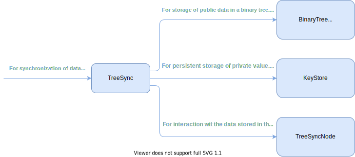
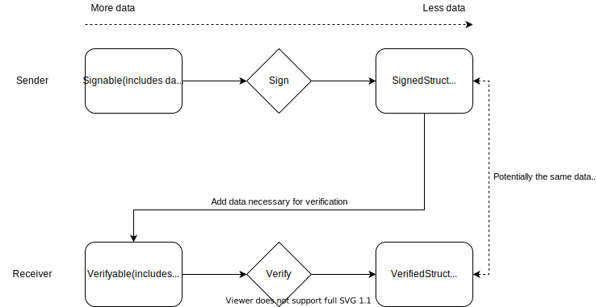

Message Validation
Validation steps
- Syntax validation: This should be mostly covered by the decoding
- Semantic validation: Checks to make sure a message is valid in a given context (signature verification, epoch number check, etc.)
- Group policy validation: checks about handshake type, etc.
- AS/policy validation: Checks to see whether syntactically and semantically correct messages should be adopted or dropped (Is a member allowed to add another member? Is a member allowed to remove another member?)
Detailed list of validation steps
Semantic validation of message framing
| ValidationStep | Description | Implemented | Tested | Test File |
|---|---|---|---|---|
ValSem001 | Wire format | ✅ | ✅ | openmls/src/group/tests/test_validation.rs |
ValSem002 | Group id | ✅ | ✅ | openmls/src/group/tests/test_validation.rs |
ValSem003 | Epoch | ✅ | ✅ | openmls/src/group/tests/test_validation.rs |
ValSem004 | Sender: Member: check the sender points to a non-blank leaf | ✅ | ✅ | openmls/src/group/tests/test_validation.rs |
ValSem005 | Application messages must use ciphertext | ✅ | ✅ | openmls/src/group/tests/test_validation.rs |
ValSem006 | Ciphertext: decryption needs to work | ✅ | ✅ | openmls/src/group/tests/test_validation.rs |
ValSem007 | Membership tag presence | ✅ | ✅ | openmls/src/group/tests/test_validation.rs |
ValSem008 | Membership tag verification | ✅ | ✅ | openmls/src/group/tests/test_validation.rs |
ValSem009 | Confirmation tag presence | ✅ | ✅ | openmls/src/group/tests/test_validation.rs |
ValSem010 | Signature verification | ✅ | ✅ | openmls/src/group/tests/test_validation.rs |
Semantic validation of proposals covered by a Commit
| ValidationStep | Description | Implemented | Tested | Test File |
|---|---|---|---|---|
ValSem100 | Add Proposal: Identity in proposals must be unique among proposals | ✅ | ❌ | TBD |
ValSem101 | Add Proposal: Signature public key in proposals must be unique among proposals | ✅ | ❌ | TBD |
ValSem102 | Add Proposal: HPKE init key in proposals must be unique among proposals | ✅ | ❌ | TBD |
ValSem103 | Add Proposal: Identity in proposals must be unique among existing group members | ✅ | ❌ | TBD |
ValSem104 | Add Proposal: Signature public key in proposals must be unique among existing group members | ✅ | ❌ | TBD |
ValSem105 | Add Proposal: HPKE init key in proposals must be unique among existing group members | ✅ | ❌ | TBD |
ValSem106 | Add Proposal: required capabilities | ❌1 | ❌ | TBD |
ValSem107 | Remove Proposal: Removed member must be unique among proposals | ✅ | ❌ | TBD |
ValSem108 | Remove Proposal: Removed member must be an existing group member | ✅ | ❌ | TBD |
ValSem109 | Update Proposal: Identity must be unchanged between existing member and new proposal | ✅ | ❌ | TBD |
ValSem110 | Update Proposal: HPKE init key must be unique among existing members | ✅ | ❌ | TBD |
1 Partly implemented, see TODOs in openmls/src/group/core_group/validation.rs.
Commit message validation
| ValidationStep | Description | Implemented | Tested | Test File |
|---|---|---|---|---|
ValSem200 | Commit must not cover inline self Remove proposal | ✅ | ❌ | TBD |
ValSem201 | Path must be present, if Commit contains Removes or Updates | ❌ | ❌ | TBD |
ValSem202 | Path must be the right length | ❌ | ❌ | TBD |
ValSem203 | Path secrets must decrypt correctly | ❌ | ❌ | TBD |
ValSem204 | Public keys from Path must be verified and match the private keys from the direct path | ✅ | ❌ | TBD |
ValSem205 | Confirmation tag must be successfully verified | ✅ | ❌ | TBD |
API
#![allow(unused)] fn main() { impl ManagedGroup { fn parse_message(&mut self, mls_message: MlsMessage) -> Result<UnverifiedMessage, ManagedGroupError> { /* - epoch must be within bounds - AAD can be extracted/evaluated - decryption - IFF content_type is a commit, confirmation_tag must be present */ } fn process_unverified_message(&self, message: UnverifiedMessage, signature_key: Option<SignatureKey>) -> Result<ProcessedMessage, ManagedGroupError> { /* - Signature verification, either with leaf key or optional parameter - IF Commit: - Extract all inline & pending proposals - Semantic validation of all proposals - IF Add Proposal: Double join check - IF Remove Proposal: Ghost removal check - IF Update Proposal: Identity must be unchanged - IF Commit: - Commit must not cover inline self Remove proposal - Path must be present, unless Commit only covers Add Proposals - Path must be the right length - Staging step: proposals must be applied to modify the provisional tree - Path must be applied and decrypt correctly - New public keys from Path must be verified and match the private keys from the direct path - Confirmation tag must be successfully verified */ } fn store_pending_proposal(&mut self, pending_proposal: PendingProposal) -> () { /* - Store proposal in pending proposal list */ } fn merge_staged_commit(&mut self, staged_commit: StagedCommit, psks: &[Psks]) -> Result<(), ManagedGroupError> { /* - Merge staged Commit values into internal group stage */ } } enum MlsMessage { Ciphertext(MlsCiphertext), Plaintext(MlsPlaintext), } impl UnverifiedMessage { fn aad(&self) -> &[u8] {} fn credential(&self) -> &Credential {} } enum ProcessedMessage { ApplicationMessage(Vec<u8>), ProposalMessage(PendingProposal), StagedCommitMessage(StagedCommit), } enum PendingProposal { Add(PendingAddProposal), Remove(PendingRemoveProposal), Update(PendingRemoveProposal), Psk(PendingPskProposal), } impl StagedCommit { fn adds(&self) -> &[PendingAddProposal] {} fn removes(&self) -> &[PendingRemoveProposal] {} fn updates(&self) -> &[PendingUpdate] {} fn psks(&self) -> &[PendingPskProposal] {} } }
Example API usage
#![allow(unused)] fn main() { // Parse either MlsPlaintext or MlsCiphertext let unverified_message = group.pares_message(mls_message).expect("E1"); // Inspect AAD (optional) if unverified_message.aad() == &[1, 2, 3] {} // Inspect credential and fetch signature key from AS (optional) let signature_key = AuthenticationService::get_key(unverified_message.credential()); let processed_message = group.process_unverified_message(unverified_message, Some(signature_key)).expect("E2"); match processed_message { ApplicationMessage(bytes) => { // Do something with application message. // No further interaction with the group is needed. }, ProposalMessage(pending_proposal) => { // We can optionally inspect the proposal before we store it in the group: match &pending_proposal { Add(pending_add_proposal) => { // Do a policy check on that proposal }, // Other type of propsals _ => {}, } // After the optional inspection we store the pending proposal in the group group.store_pending_proposal(pending_proposal); } StagedCommitMessage(staged_commit) => { // We can optionally inspect all proposals covered by the Commit message before we merge it into the group: for add_proposal in &staged_commit.adds() { // Inspect add proposals here } // Inspect PSKs and get them from a store: let psks = staged_commit.psks.iter().map(|p| PskStore::fetch_psk(p)).collect(); // Merge the staged commit into the group group.merge_staged_commit(staged_commit, psks).expect("E3"); } } }
Legacy stuff
Validation function
The validation function has access to the inner state of a ManagedGroup and takes any inbound message from the DS as input. The messages are processed as follows:
Application messages
The message is checked and marked as either valid or invalid.
Proposals
The message is checked and marked as either valid or invalid. Proposals are stored inside a ManagedGroup and only evaluated when a Commit message is processed.
Commits
The message is checked and marked as either valid, invalid or pending validation. If the Commit message covers proposals that require validation by the AS, a PendingValidationMessage type message is returned. The list of operations in that message covers all relevant proposals that were previously received in the current epoch.
#![allow(unused)] fn main() { impl ManagedGroup { ... fn validate(&mut self, mls_message: MlsMessage) -> EvaluatedMessage { ... } ... } enum MlsMessage { Plaintext(MlsPlaintext), Ciphertext(MlsCiphertext), } enum EvaluatedMessage { ValidMessage(ValidPlaintextMessage), PendingValidation(PendingValidationMessage), InvalidMessage(InvalidMessageDetails), } }
Valid messages
Valid messages are either automatically valid if they passed all checks, or can be converted from PendingValidationMessage by manual validation.
#![allow(unused)] fn main() { struct ValidPlaintextMessage(MlsPlaintext) }
Messages pending validation
Messages are marked as pending validation if input from the AS is required.
#![allow(unused)] fn main() { struct PendingValidationMessage { message: MlsPlaintext, operations: Vec<OperationType>, } impl PendingValidationMessage { fn validate(&self) -> ValidPlaintextMessage { ... } } enum OperationType { Add(AddOperation), Remove(RemoveOperation), Join(JoinOperation), Leave(LeaveOperation), Psk(PskOperation), } struct AddOperation { ... } ... }
Invalid messages
Messages that didn't pass the syntactic & semantic checks are marked as invalid with a reason for their invalidity.
#![allow(unused)] fn main() { struct InvalidMessageDetails { sender: Option<Sender>, reason: InvalidMessageReason, } enum InvalidMessageReason { InvalidGroup, InvalidGeneration, InvalidCiphertext, InvalidSignature, InvalidMembershipTag, DoubleJoin, GhostRemoval, InvalidUpdate, ... } }
Tree Rewrite Project

TreeSync
TreeSync is a tree structure that keeps public data in a left-balanced binary tree structure and relies on a KeyStore to store private data. Not every node has to contain data. A node not containing data is considered blank. The TreeSyncNode API determines how TreeSync interacts with the data it stores.

Node Indexing
The current MLS spec explicitly relies on leaf- or node indices specific to the array-representation of a tree to indicate individual nodes. Thus, to keep it simple, this draft of a TreeSync API relies on the same indices.
In an actual implementation, we might have to translate from the array-specific
indices to whatever is used by the actual binary tree implementation underneath
TreeSync.
TreeSyncNode API
TreeSync relies on the TreeSyncNode to represent the layer of abstraction
below it.
#![allow(unused)] fn main() { trait TreeSyncNode { /// Return the value of the node relevant for the parent hash and tree hash. /// In case of MLS, this would be the node's HPKEPublicKey. TreeSync /// can then gather everything necessary to build the `ParentHashInput`, /// `LeafNodeHashInput` and `ParentNodeTreeHashInput` structs for a given node. fn node_content(&self) -> &[u8] {} /// Get the list of unmerged leaves. fn unmerged_leaves(&self) -> &[LeafIndex] {} /// Clear the list of unmerged leaves. fn clear_unmerged_leaves(&mut self) {} /// Add a `LeafIndex` to the node's list of unmerged leaves. fn add_unmerged_leaf(&mut self, LeafIndex) {} /// Set the parent hash value of this node. fn set_parent_hash(&mut self, Vec<u8>) {} /// Get the parent hash value of this node. fn parent_hash(&self) -> &[u8] {} /// Set the tree hash value for the given node. /// This assuming that the node caches the tree hash. fn set_tree_hash(&mut self, Vec<u8>) {} /// Get the tree hash value for the given node. fn tree_hash(&self) -> &[u8] {} /// Verify the signature on a given leaf node. Returns an /// error if called on a non-leaf node. fn verify(&self) -> Result<bool, TreeSyncNodeError> {} } }
TreeSync API
Note, that a majority of the tree operations are performed on TreeSyncDiffs (see below).
#![allow(unused)] fn main() { struct TreeSync<Node: TreeSyncNode, KeyStore: TreeSyncKeyStore> { FLBBinaryTree<Option<Node>> } impl<Node: TreeSyncNode, KeyStore: TreeSyncKeyStore> TreeSync<Node, KeyStore> { /// Return the tree hash of the root node. fn tree_hash(&self) -> Vec<u8> {} /// Verify the parent hash of every parent node in the tree. fn verify_parent_hashes -> Result<(), TreeSyncError> {} /// Merge the given diff into the `TreeSync` instance. This operation /// re-computes all necessary tree hashes. /// Note, that the private values corresponding to the ones in the /// TreeSync should be committed at the same time. fn merge_diff(&mut self, tree_sync_diff: TreeSyncDiff) -> Result<(), TreeSyncError> {} /// Create an empty diff based on this TreeSync instance all operations /// are created based on an initial, empty diff. fn empty_diff(&self) -> TreeSyncDiff {} } }
TreeSyncDiffs
#![allow(unused)] fn main() { struct<Node: TreeSyncNode> TreeSyncDiff<Node> { nodes: HashMap<NodeIndex,Option<Node>>, } impl<Node: TreeSyncNode, KeyStore: TreeSyncKeyStore> TreeSyncDiff<Node> { /// Update a leaf node and blank the nodes in the updated leaf's direct path. fn update_leaf(&mut self, leaf_node: Node, leaf_index: LeafIndex) -> TreeSyncDiff {} /// Adds a new leaf to the tree either by filling a blank leaf or by creating a new leaf, /// inserting intermediate blanks as necessary. This also adds the leaf_index of the new /// leaf to the `unmerged_leaves` state of the parent nodes in its direct path. fn add_leaf(&mut self, leaf_node: Node) -> Result<TreeSyncDiff, TreeSyncError> {} /// Remove a group member by blanking the target leaf and its direct path. fn remove_leaf(&mut self, leaf_index: LeafIndex) -> Result<TreeSyncDiff, TreeSyncError> {} /// Process a given update path, consisting of a vector of `Node`. This /// function /// * replaces the nodes in the direct path of the given `leaf_node` with the /// the ones in `path` and /// * computes the `parent_hash` of all nodes in the path and compares it to the one in /// the `leaf_node`. fn update_path(&mut self, leaf_node: Node, path: Vec<Node>) -> TreeSyncDiff {} /// Compute the tree hash of the TreeSync instance we would get when merging the diff. fn tree_hash(&self) -> Vec<u8> {} } }
TreeSync Usage Example
#![allow(unused)] fn main() { /// This function demonstrates how TreeSync could be used to manage a tree and could be /// used in create_commit to create a provisional tree and the /// corresponding values (tree_hash, commit_secret, etc). /// It returns the diff resulting from the operations applied to the TreeSync instance, /// as well as the vector of `NodeSeed`s that can then be encrypted using TreeKEM. /// Note, that the application with apply_commit is slightly asymmetrical, as we would potentially have /// to pass in an additional `path` for TreeSync to apply. fn apply_proposals(&self, key_store: &KeyStore, proposal_list: Vec<Proposal>) -> Result<(TreeSyncDiff), ApplyProposalsError>{ // ... // as Proposals are not generic, we have to translate them // individually to TreeSync operations // the assumption here is that the list of proposals is already // ordered by type and order as per commit let mut path_required = false; let mut my_new_key_package = None; let mut diff = self.tree_sync.empty_diff(); for proposal in &proposal_list { match proposal { Update(key_package) => { // If we process an update, we need to include a path in the end path_required = true; // We process self updates later using the update_path function if key_package.identity() != &self.identity { diff.update_leaf(key_package.into()) } else { my_new_key_package = Some(key_package) } }, Add(key_package) => diff.add(TreeSyncNode::from(key_package)), // It's not clear yet how to expose "identity" to TreeSync. Remove(leaf_index) => { // If we process a remove, we need to include a path in the end path_required = true; diff.remove(leaf_index), } }; } // If we want to create a path and/or one of the updates was a // self-update. if path_required || my_new_key_package.is_some() { // a path is required, but there's no explicit update, generate a new key_package if my_new_key_package.is_none() { my_new_key_package = key_store.generate_key_package_bundle(...); } // We assume that this function gives us the path based on the leaf_secret of the // key package bundle, which is in the key store. let (path, path_secrets) = create_path(&key_store, &my_new_key_package)?; // The private values generated in the process are put into the key store // This will compute the path secret and set it in the new leaf node. diff.update_path(TreeSyncLeafNode(my_new_key_package.unwrap()), path)?; } else { diff } // We can now call TreeKEM and encrypt the `path_secrets` (see below). } }
TreeKEM Trait
TreeKEM would take one of the "node seed" discussed above and encrypt/decrypt
it. For encryption/decryption it would need access to a TreeSync instance, where
Node implements TreeKemNode, which in turn provides the functions that
TreeKEM needs. In particular, it would have to provide access to the public keys
of each node.
#![allow(unused)] fn main() { trait TreeKemNode<KeyStore: TreeSyncKeyStore> { /// Encrypt a given plaintext to the node's public key. fn encrypt(&self, plaintext: &[u8]) -> HpkeCiphertext {} /// Decrypt a given ciphertext using the secret key corresponding to the node. fn decrypt(&self, key_store: &KeyStore, ciphertext: &HpkeCiphertext) -> Vec<u8> {} } trait<KeyStore: TreeSyncKeyStore> TreeKem<KeyStore> { /// Create an UpdatePath by encrypting a vector of `NodeSeed`s /// to the direct path of our own leaf. fn encrypt_path(&self, path: Vec<NodeSeed>) -> Result<UpdatePath, TreeKemError> {} /// Decrypt an UpdatePath, returning the `NodeSeed` and the vector of `Node`s. fn decrypt_path(&self, key_store: KeyStore, update_path: UpdatePath) -> Result<(NodeSeed, Vec<Node>), TreeKemError> {} } }
Questions:
- Should we allow TreeKEM to know about KeyPackages or do we draw the abstraction line at public keys? It needs to know about KeyPackages to be able to return an UpdatePath. Otherwise it would be a vector of UpdatePathNode.
TODO: Create a KeyStore API for TreeKem. See https://github.com/franziskuskiefer/key-store-rs/blob/main/src/traits.rs
KeyStore API (old API for TreeSync)
TreeSync requires a place in which to store secrets and private keys. In particular, it should store:
- Pairs of
(PrivateState, NodeSeed)indexed byPrivateStateHandlefor updates to one's own leaf node. These are independent of a given group and get consumed when used. - A
NodeSeed, which represents theCommitSecretin MLS-terms. - A number of
PrivateState, representing the private values of the nodes in one's own direct path, indexed by Node indices. This includes thePrivateStateof the leaf. - A temporary
Vec<PrivateState>, for the private part of a provisional TreeSync state. - A temporary
NodeSeed, for the private part of a provisional TreeSync state.
The individual get and erase functions allow the persistence of derivations of
the NodeSeed before deleting it.
#![allow(unused)] fn main() { trait TreeSyncKeyStore<Node: TreeSyncNode> { /// Store a pair of `Node::NodeSeed` and `Node::PrivateState` corresponding to a /// `Node` meant to be used as a leaf node in a future update. Note, that /// the `Node::NodeSeed` will only be used if we commit the update ourselves. fn store_leaf_node_private_state(&mut self, node_seed: Node::NodeSeed, private_values: Node::PrivateState) {} /// Take a pair of `Node::NodeSeed` and `Node::PrivateState` corresponding to a /// `Node::PrivatStateHandle`, thereby removing it from the store. fn take_leaf_node_private_state(&mut self, handle: Node::PrivateStateHandle) -> Result<(Node::NodeSeed, Node:: PrivateState), KeyStoreError> {} /// Store the temporary `Vec<Node::PrivateState>` and `Node::NodeSeed`. fn store_temporary_private_states(&mut self, private_values: (Vec<Node::PrivateState>, Node::NodeSeed)) {} /// Commit to the current temporary `Vec<Node::PrivateState>` and `Node::NodeSeed` /// by using it to overwrite the corresponding non-temporary values. fn commit_to_temporary_values(&mut self) {} /// Get the `Node::NodeSeed`. Note, that it should be removed using /// `erase_node_seed` after it was used. fn node_seed(&self) -> Node::NodeSeed {} /// Get the `Node::NodeSeed`. Note, that it should be removed using /// `erase_node_seed` after it was used. fn erase_node_seed(&mut self) {} } }
Binary Tree API
TreeSync, TreeKEM and TreeDEM rely on an underlying full, left-balenced
binary tree representation FLBBinaryTree to organise its data and to process
it.
As discussed above, the following binary tree API relies on the indices of an array-based binary tree representation. While the binary tree implementation needs to provide an interface based on these indices, it does not necessarily need to organise the data in memory in the style of the array-representation.
#![allow(unused)] fn main() { trait FLBBinaryTree<Node> { /// Obtain a reference to the data contained in the `Node` at index `node_index`. /// Returns an error if the index is outside of the tree. fn node(&self, node_index: NodeIndex) -> Result<&Node, FLBBBinaryTreeError> {} /// Obtain a mutable reference to the data contained in the `Node` at index `node_index`. /// Returns an error if the index is outside of the tree. fn node_mut(&mut self, node_index: NodeIndex) -> Result<&mut Node, FLBBBinaryTreeError> {} /// Add two nodes to the right side of the tree. Nodes can only be /// added in pairs to keep the tree full. fn add(&mut self, node_1:Node , node_2: Node) -> Result<(), FLBBBinaryTreeError> {} /// Remove the two rightmost nodes of the tree. fn remove(&mut self) -> Result<(), FLBBBinaryTreeError> {} } }
Open Questions/TODOs:
-
What's the
BinaryTreeAPI? (FK)- Added a secion on full, left-balanced BinaryTree API. It leaves a lot of
functionality in
TreeSync, but it keeps the interface simple and small.
- Added a secion on full, left-balanced BinaryTree API. It leaves a lot of
functionality in
-
How do diffs work with the key store? (FK)
- There's now a TreeSync specific KeyStore API that includes temporary values.
- Write an example of what kind of secrets we want to store and when, as well as what kind of secrets we want to delete and when.
- Store secrets based on group + epoch.
- Implement CRUD interface.
-
What's the most efficient data structure for
TreeSyncDiff? (FK)- If it's a vector, the elements should get a struct.
- Initial idea is to make it a
HashMap<NodeIndex,TreeSyncNode>
- Does any of these structs need internal mutability? (FK)
- Should there be shared functionality for diffs? (FK)
-
TreeSyncshould have a cache for hashes. (FK)- The current design requires the underlying nodes to do the hashing. Not sure if that's the optimal approach.
- Design API for TreeDEM
-
Rework Diff types to be abstract and independent of the binary tree implementation
- We have the same argument here as for MLS. We need some way to address individual nodes and we use indices from the array-based representation for that. As long as the underlying binary tree maps that to the underlying memory model, it should work fine.
- Do we want persistence for diffs?
Type-Enforced Verification
We use Rust's type checker to achieve additional security guarantees regarding the signing and verification of structs. There are four traits:
Signable: A payload that the sender/signer of a message can create. The trait provides asignfunction that produces aSignedStruct.SignedStruct: The result of signing aSignablestruct. This struct can actually be encoded and sent over the wire. TheSignedStructdoes not necessarily contain all the information required to sign or verify the struct.Verifiable: A payload, potentially received from the wire with a signature and all information required to verify the struct. When receiving aSignedStruct, the receiver can add additional information required to make the struct verifiable. Provides averifyfunction.VerifiedStruct: The result of calling theverifyfunction on aVerifiablestruct. TheVerifiedStructis what is accepted by further processing functions on the receiving side.

Performance
How does OpenMLS (and MLS in general) perform in different settings?
Performance measurements are implemented here and can be run with cargo bench --bench group.
Make sure that check in the code which scenarios and group sizes are enabled.
OpenMLS Performance Spreadsheet
Real World Scenarios
Stable group
Many private groups follow this model
- Group is created by user P1
- P1 invites a set of N other users
- The group is used for messaging between the N+1 members
- Every X messages one user in the group sends an update
Somewhat stable group
This can model a company or team wide group where regularly but infrequently users are added and users leave
- Group is created by user P1
- P1 invites a set of N other users
- The group is used for messaging between the members
- Every X messages one user in the group sends an update
- Every Y messages Q users are added
- Every Z messages R users are removed
High fluctuation group
This models public groups where users frequently join and leave. Real-time scenarios such as gather.town are an example of high fluctuation groups. It is the same scenario as the somewhat stable group but with a very small Y, Z.
Extreme Scenarios
In addition to the three scenarios above extreme and corner cases are interesting.
Every second leave is blank
Only every second leave in the tree is non-blank.
Use Case Scenarios
A collection of common use cases/flows.
Long-time offline device
If a device has been offline for a while, it has to process a large number of application and protocol messages.
Tree scenarios
In addition the scenarios above it is interesting to look at the same scenario but with different states of the tree. For example, take the stable group with N members messaging each other. How is the performance different between a message sent right after group setup, i.e. each member only joined the group without other messages being sent, and a tree where every member has sent an update before the message?
Measurements
- Group creation
- create group
- create proposals
- create welcome
- apply commit
- Join group
- create group from welcome
- Send application message
- Receive application message
- Send update
- create proposal
- create commit
- apply commit
- Receive update
- apply commit
- Add user sender
- create proposal
- create welcome
- apply commit
- Existing user getting an add
- apply commit
- Remove user sender
- create proposal
- create commit
- apply commit
- Existing user getting a remove
- apply commit
Forward Secrecy
To achieve forward secrecy, OpenMLS drops key material immediately after a given
key is no longer required by the protocol. For some keys this is simple, as they
are used only once and there is no need to store them for later use. However,
for other keys, the time of deletion is a result of a trade-off between
functionality and forward secrecy. For example, it can be desirable to keep the
SecretTree of past epochs for a while to allow decryption of straggling
application messages sent in previous epochs.
In this chapter, we detail how we achieve forward secrecy for the different types of keys used throughout MLS.
Ratchet Tree
The ratchet tree contains the secret key material of the client's leaf, as well (potentially) that of nodes in its direct path. The secrets in the tree are changed in the same way as the tree itself: via the merge of a previously prepared diff.
Commit Creation
Upon the creation of a commit, any fresh key material introduced by the committer is stored in the diff. It exists alongside the key material of the ratchet tree before the commit until the client merges the diff, upon which the key material in the original ratchet tree is dropped.
Commit Processing
Upon receiving a commit from another group member, the client processes the
commit until they have a StagedCommit, which in turn contains a ratchet tree
diff. The diff contains any potential key material they decrypted from the
commit, as well as any potential key material that was introduced to the tree as
part of an update that someone else committed for them. The key material in the
original ratchet tree is dropped as soon as the StagedCommit (and thus the
diff) is merged into the tree.